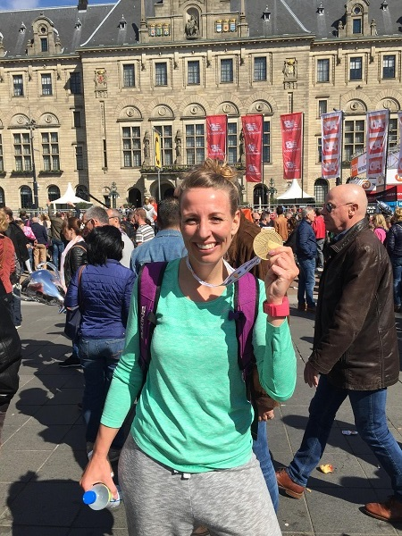
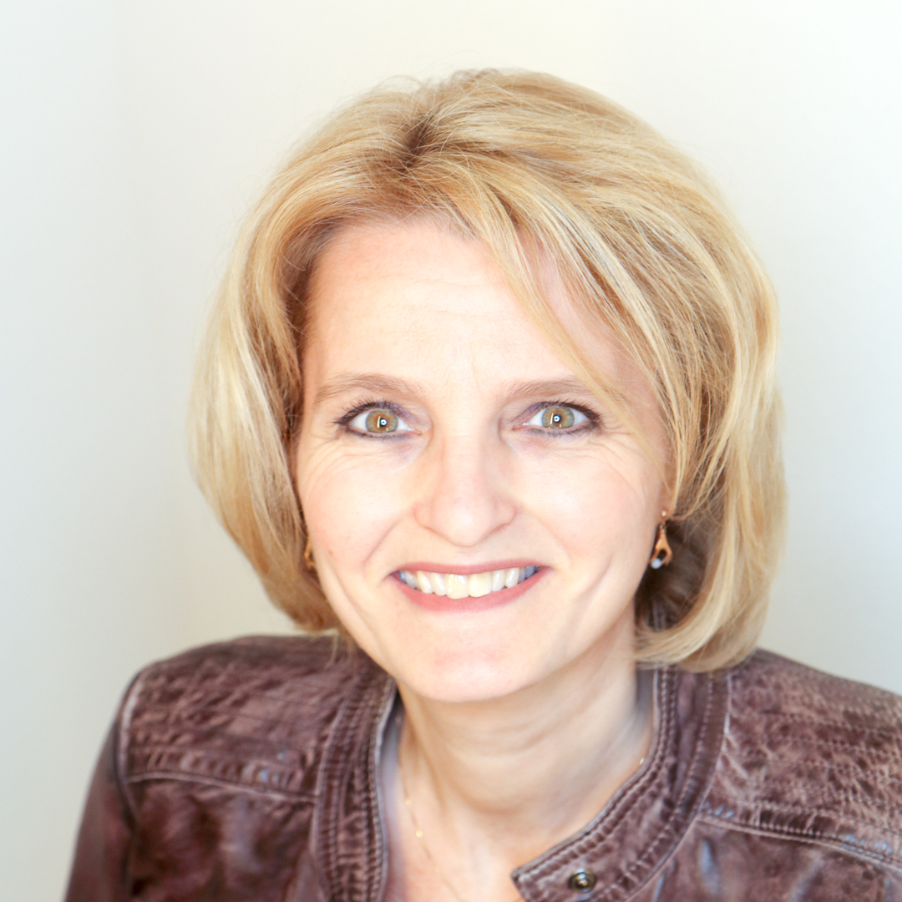
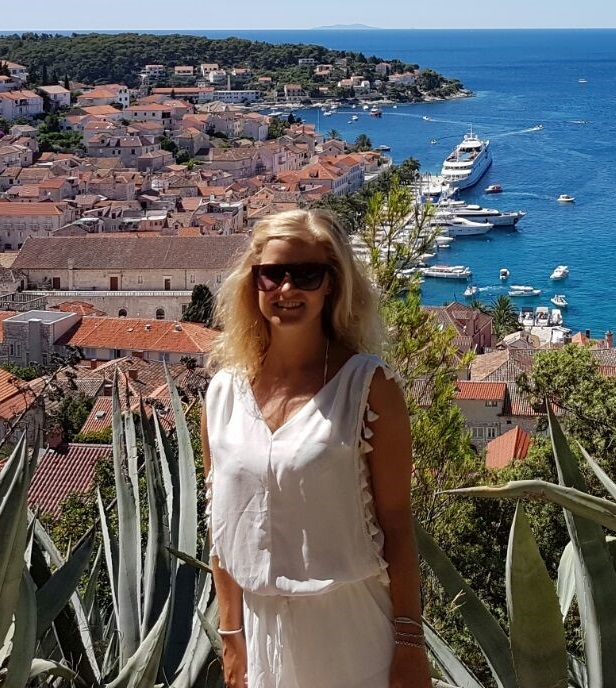
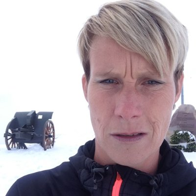
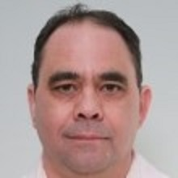

Willem de Vries – teamcaptain en loper.
De reden dat ik meedoe met de RoPaRun is omdat ik het geweldig vind om mijn passie (verslaving:) voor het hardlopen te combineren met het geweldige doel van de RoPaRun. Hardlopen zit in mijn DNA, waarom dan niet dit combineren met de RoPaRun! Het wordt mijn 4de RoPaRun en alhoewel ik vind dat je niet per se een motivatie moet hebben om mee te doen, immers vind ik dat personen die palliatief zijn ook recht hebben op kwaliteit van leven zolang ze nog bij ons zijn. En dat is vaak niet lang, heb ik het wel van dichtbij moeten meemaken en zie ik van dichtbij vaak dat hospices, (een van de doelen van de RoPaRun) hoe geweldig de medewerkers zijn die daar werken en hoe goed ze zijn voor de patiënten en hoor ik vaak van patiënten dat ze nog een geweldige tijd hebben gedurende de korte periode dat ze nog leven. Denk ook aan stichting haarwens (ook een doel van de RoPaRun). Veel kinderen die als gevolg van een medische behandeling of een andere oorzaak kaal zijn of worden, zouden er alles voor over hebben om weer met een volle haardos door het leven te kunnen. Stichting Haarwensen zorgt ervoor dat deze kinderen een pruik van echt haar kunnen dragen. Zonder dat daar kosten aan verbonden zijn voor de ouders.Dat is de RoPaRun! Daar sta ik voor:
Niet alleen voor onze volgende generatie of onze legacy, maar voor iedereen die recht heeft op kwaliteit van leven.
 Ik ben Cynthia, secretaresse bij Eneco, en
ga nu voor de 2e keer mee als verzorger van de catering op het basiskamp.Tussen alle etappewisselingen sta ik klaar
met mijn teamgenoten om iedereen van een lekkere maaltijd te voorzien zodat we vol energie de RoPaRun kunnen volbrengen.
Ik ben Cynthia, secretaresse bij Eneco, en
ga nu voor de 2e keer mee als verzorger van de catering op het basiskamp.Tussen alle etappewisselingen sta ik klaar
met mijn teamgenoten om iedereen van een lekkere maaltijd te voorzien zodat we vol energie de RoPaRun kunnen volbrengen.
Mijn naam is Daisy Devente (33 jaar) en voor het vijfde jaar op rij mag ik als loper aan de start staan in Parijs. Dit wordt het derde jaar voor Team Eneco Runners en ik kan niet wachten om, samen met dit team, aan het Roparun avontuur te beginnen. Door Marcel Uppelschoten ben ik bij Eneco betrokken geraakt, eerst als invaller om te hardlopen en nu ben ik er gewoon ieder jaar weer bij. Iedereen in zijn omgeving, dichtbij of verder weg, kent wel iemand met kanker. Ik vind het bewonderenswaardig hoe mensen met deze ziekte omgaan, of je dit nu meemaakt als "patiënt" of als betrokken familie/vrienden. Deze periode met elkaar wordt intenser, hechter en de kleine dingen gaan (ineens) tellen in het leven.
Ook de Roparun is intens, krachtig en tijdens die lange route blijven we niet vergeten waar we het voor doen. Dat ik op een sportieve manier mijn steentje kan bijdragen, er dit jaar weer mag bij zijn, is een kleine moeite om te doen!
Mijn naam is Karin van IJzendoorn, ik doe nu voor de 3e keer mee met de RoPaRun in de rol van navigator. In de aanloop naar de Roparun probeer ik zoveel mogelijk geld in te zamelen om een mooie bijdrage te kunnen leveren aan het doel van de RoParun: “Leven toevoegen aan de dagen, waar vaak geen dagen meer kunnen worden toegevoegd aan het leven”.
Mijn naam is Karlijn Drost, 30 jaar en fysiotherapeute bij Movamento. Ik ben een sportfanaat en zeker in voor een mooie uitdaging. Op de vraag of ik als fysiotherapeut/verzorger mee wilde doen met de Roparun, kon ik natuurlijk geen nee zeggen. Een super mooi, sportief evenement om geld op te halen voor een goed doel. Ik ben klaar voor een mooie persoonlijke ervaring, een fantastische team prestatie en ik hoop op deze manier een mooie bijdrage te kunnen leveren voor het goede doel.
Ik ben Valeska Blok Teamleidster Stedin Operations, Beheer Bijzondere Aansluitingen Tijdens de Roparun ondersteun ik als fietser de lopers binnen het team Eneco Runners Het is voor mij de eerste en heb er veel zin in. Ik hou van uitdagingen en samen met een team strijden. Deelname aan de Roparun is een mooie aanvulling van mijn lijstje omtrent het beklimmen van de Stelvio met de racefiets, deelnemen aan de Mont Ventoux en met collega’s de Sella Ronda fietsen.
Ik ben Hugo Mutter, thans niet meer werkzaam bij Eneco maar EnecoRunners is één van de lijntjes die ik nog met Eneco heb. Tijdens de RoParun heb ik de rol van Chauffeur. De editie van 2017 wordt alweer mijn derde deelname. Mijn voornaamste driver om mee te doen aan de RoParun is bij te dragen aan het primaire doel en motto van de RoParun; “Leven toevoegen aan de dagen, waar vaak geen dagen meer kunnen worden toegevoegd aan het leven”. Maar de RoParun is bovenal fun, saamhorigheid, leven op adrenaline, teamgeest en ook weinig slapen en douchen :-).